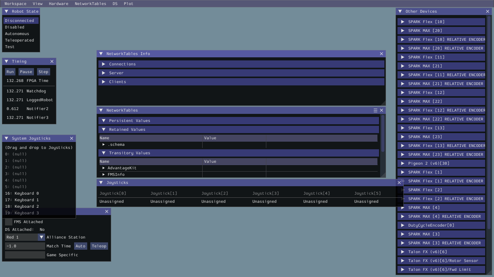
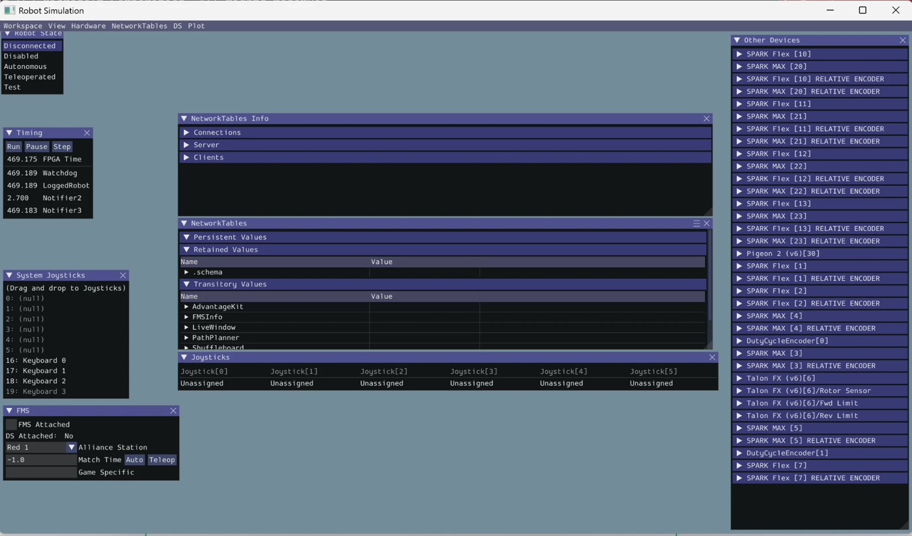

Running the robot simulator
Team 8567 · 2026 "Rebuilt" robot · branch sim/shooter-seperate-sim · written for mentors, parents, drivers and new members, not just programmers
Terms with a dotted underline have a tooltip; hover over them (or tap on a phone) for a plain-English explanation. Each section ends with a Learn more box linking to the official documentation.
- 1. What you need (one-time setup)
- 2. Getting the code
- 3. Starting the simulator
- 4. The simulator window, explained
- 5. Driving the robot
- 6. Controller map
- 7. Watching it in AdvantageScope
- 8. Running an autonomous routine
- 9. The automatic self-test
- 10. When something goes wrong
- 11. What the simulator does not do
- 12. Verified platforms
- Glossary
1. What you need (one-time setup)
Everything below is free. Allow about 30 minutes and a good internet connection the first time.
| Install | Why | Where |
|---|---|---|
| WPILib 2026 (includes VS Code, Java, AdvantageScope) | The FRC software suite. This is the only thing that matters; it bundles the editor, the correct Java, and the viewing tools. | WPILib installation guide |
| GitHub account + team access | The repository is private. You need a GitHub account that has been added to the team's ultraviolet8567 organization (see section 2). | Sign up, then ask a mentor for the invitation |
| Git | To download the team's code and switch to this branch. | git-scm.com (on a Mac, installing Xcode command-line tools also works) |
| Xbox-style controller (optional) | Much nicer than the keyboard. Any USB or Bluetooth Xbox controller works. | — |
openjdk@17 also works if you set JAVA_HOME.2. Getting the code
- A free GitHub account.
- Membership in the team's GitHub organization, ultraviolet8567. Ask a programming mentor or the team's GitHub admin to invite the account you created; the invitation arrives by email and must be accepted. Until then the link below shows a 404 page, and
git clonefails with "repository not found".
Because the repository is private, Git will also ask you to sign in the first time you clone. Use your GitHub username and a personal access token (not your GitHub password, which Git no longer accepts), or install GitHub CLI and run gh auth login, which handles it for you. On Windows, Git for Windows pops up a browser sign-in automatically.
The team's code lives on GitHub at github.com/ultraviolet8567/Rebuilt. Open a terminal (Mac: Terminal app; Windows: Git Bash, which comes with Git) and run these three lines, one at a time:
git clone https://github.com/ultraviolet8567/Rebuilt.git
cd Rebuilt
git checkout sim/shooter-seperate-simThe last line switches to the branch that contains the simulator. If you already have the code, just run the last line inside the folder, then git pull.
3. Starting the simulator
Option A: from VS Code (recommended)
Rebuilt folder.Option B: from a terminal
./gradlew simulateJava(Windows: gradlew simulateJava). This is exactly what VS Code runs behind the scenes.
[Init] Running in DESKTOP SIMULATION. You are running the robot program.4. The simulator window, explained
- Robot State is the on/off switch. The robot program is always running, but motors only respond when it is enabled: choose Teleoperated for driving, Autonomous to run a pre-planned routine, Disabled to stop everything.
- System Joysticks lists input devices your laptop can see. The keyboard always appears as "Keyboard 0". A real controller appears by name once plugged in.
- Joysticks is the robot's view: slot 0 is the driver controller, slot 1 the operator. Drag from the left pane into a slot to connect it.
- NetworkTables is a live list of every number the robot publishes, and of dashboard controls like the auto picker.
- DS / FMS lets you pretend to be Red or Blue alliance.
5. Driving the robot
Odometry/Pose in NetworkTables, or better, use AdvantageScope (next section) to see it on the field.6. Controller map
These are the real robot's bindings; the simulator uses the same code.
Driver (Joystick[0])
| Control | What it does |
|---|---|
| Left stick | Move (field-oriented) |
| Right stick, left/right | Turn |
| Right bumper (hold) | Slow mode: one-third speed, with a light rumble |
| Right trigger (hold) | Auto-aim: keeps the robot pointed at the hub while you drive |
| X (hold) | Lock wheels in an X so the robot cannot be pushed |
| Back | Reset which way is "forward" (gyro zero) |
Operator (Joystick[1])
| Control | What it does |
|---|---|
| A / X / Y | Intake pivot down (deployed) / middle / up (stowed) |
| Left bumper (hold) | Run the intake rollers (funnel) |
| B (hold) | Intake rollers in reverse |
| Left trigger (hold) | Run the indexer (moves game pieces toward the shooter) |
| Right trigger (hold) | Calculated shot: spins the flywheel to a speed computed from the distance to the hub and runs the indexer |
| Right bumper (hold) | Fixed shot: flywheel to the dashboard "TargetVelocity" value, hood up, indexer on |
| D-pad up / down (hold) | Nudge the hood angle |
| D-pad left (hold) | "Feed": wiggles the intake pivot to unjam pieces |
| (automatic) | The kicker wheel runs by itself once the flywheel is at speed |
To use a second controller in the simulator, drag another device onto Joystick[1]. With one Xbox controller you can put it in slot 0 to drive, then move it to slot 1 to try the shooter.
7. Watching it in AdvantageScope
AdvantageScope is where the simulator becomes useful. It draws the robot on the field and graphs every number the code logs.
| Tab | Drag in | You will see |
|---|---|---|
| Odometry (2D field) | Odometry/Pose (as Robot) and Swerve/SimTruePose (as Ghost) | The robot on the 2026 field. The ghost is where the simulator says it really is; the solid one is where the robot thinks it is. Drive around and watch them drift apart: that gap is what the camera fixes on the real robot. |
| Swerve | Swerve/ModuleStates and TargetState | Four arrows showing where each wheel points and how fast it spins, commanded vs actual. |
| Line Graph | Shooter/Flywheel/Lead/Velocity, Shooter/Flywheel/TargetVelocity | Flywheel spin-up when you hold the right trigger. Add Shooter/Kicker/KickerRunning to see the kicker fire once the wheel is at speed. |
| Mechanism | Mechanism2d/IntakePivot, Mechanism2d/Hood | Stick-figure drawings of the intake arm swinging down and the hood angle changing. |
| Line Graph | Sim/BatteryVoltage, Sim/TotalCurrentAmps | The pretend battery sagging when everything runs at once. |
Every run also saves a log file in the logs/ folder inside the project. Open one later with File → Open Log and scrub through it with the timeline, exactly as the team does with logs from real matches.
8. Running an autonomous routine
The autonomous routines are chosen with two drop-downs the robot publishes to the dashboard. In the simulator you set them through the NetworkTables pane (or open Shuffleboard from the WPILib tools):
Shuffleboard → Main → Side and set selected to Middle, Left or Right.Drive Out and set selected to Drive Out or Shoot. The Auto Name field shows the resulting routine, e.g. Shoot Middle, or says it does not exist if the combination is not a real routine.Auto/Routine shows the name.9. The automatic self-test
The branch includes a test that boots the simulated robot with no window at all and checks that driving, steering, the gyro, the flywheel, the hood and the intake pivot all do what they should. Run it whenever the code changes:
./gradlew testA green BUILD SUCCESSFUL means the simulation and the control code still agree. There are 35 checks in 9 groups: the simulation smoke test (driving, steering, gyro, flywheel, hood, pivot), a boot as the Red alliance, command wiring and behavior, the auto chooser, the shooter lookup table, hub geometry, LEDs, and the alliance-flip and tunable-number helpers. A failure prints which check failed and by how much. The whole run takes under a minute.
10. When something goes wrong
| Symptom | Likely cause and fix |
|---|---|
| "Unsupported class file major version" or "invalid source release: 17" | The wrong Java is being used. Run from WPILib VS Code, or set JAVA_HOME to a Java 17 (Mac Homebrew: export JAVA_HOME=/opt/homebrew/opt/openjdk@17). |
| "Repository not found" or a GitHub 404 page | Your GitHub account is not yet in the team organization, or you are not signed in. Check the invitation email, and make sure Git is using the account that was invited. |
| First run sits at "Downloading" for a long time | Normal; it fetches about 1 GB of libraries once. Needs internet. |
| Robot does not move when I push the stick | Check, in order: Robot State is Teleoperated; a device is in Joystick[0]; for keyboard, the pane has focus (click it) and axis 4 is mapped if you want to turn. |
| Lots of "Joystick Button 7 on port 0 not available" warnings | Harmless. It means no controller is in slot 0 yet. |
| "Address already in use" or AdvantageScope will not connect | An older simulator is still running. Quit any other Robot Simulation windows, or restart the computer. |
| Everything is tiny / the window is blank on macOS | Resize the window once; the panes redraw. The Window menu restores closed panes. |
| The robot drives the wrong way | Alliance colour in the DS pane. Press Back on the driver controller to re-zero the heading. |
| Windows: "Could not load library" / "UnsatisfiedLinkError" on an ARM laptop (Surface, Snapdragon) | You are running an ARM64 Java. Install an x64 Java 17 (the WPILib installer's JDK is fine); it runs under Windows' built-in emulation and WPILib's x64 native libraries load normally. |
| Ubuntu: the Robot Simulation window is black, or "GLX" errors in the terminal | Usually a virtual machine or a driver without a working OpenGL 3 context. Run LIBGL_ALWAYS_SOFTWARE=1 ./gradlew simulateJava to use Mesa's software renderer; it is plenty fast for the sim GUI. |
| Ubuntu: "java: command not found" | sudo apt install openjdk-17-jdk git, or use the WPILib installer's Linux build which brings its own JDK. |
| Vision / Limelight values are all zero | Expected. There is no camera in the simulator; the robot navigates by wheel odometry alone. |
simgui.json, networktables.json, logs/ and ctre_sim/ in the project folder. They are already ignored by Git, so they will not show up in your changes.11. What the simulator does not do
- No vision. The Limelight camera is not modelled, so there is no vision correction to odometry. That is deliberate: it lets you see how much odometry drifts on its own.
- No game pieces. The intake, indexer and shooter spin, but nothing is "in" them. Whether a shot would score is not computed.
- No collisions. The robot can drive through field walls.
- Physics numbers (masses, inertias) are reasonable guesses, kept together in
Constants.SimConstants. The sim feels roughly right; it is not a substitute for tuning on the real robot. - Battery voltage is estimated, current limits are not enforced, and motors do not overheat.
12. Verified platforms
The branch was built, its self-test run, and the simulator launched on all three operating systems the team uses. Same code, same commands.
| Platform | Build + 7 self-tests | Simulator window | Notes |
|---|---|---|---|
| macOS 26 (Apple Silicon) | Pass | Opens and runs | Homebrew openjdk@17 or the WPILib JDK. Primary development machine. |
| Ubuntu 24.04 (ARM64, Parallels VM) | Pass | Opens and runs (screenshot below) | sudo apt install openjdk-17-jdk git. 2 CPUs / 4 GB is enough. Runs under Wayland via XWayland; if the window is black on a virtual GPU, start it with LIBGL_ALWAYS_SOFTWARE=1. |
| Windows 11 (ARM64, Parallels VM) | Pass | Opens and runs | Use an x64 Java 17 (the WPILib installer's, or Temurin x64); WPILib ships no ARM64 Windows natives, so the x64 JDK runs under emulation. Git is optional: the "Download ZIP" button on GitHub works once you are signed in with an account that has team access. The lineEndings 'UNIX' Spotless setting on this branch is what makes gradlew build pass on Windows. |


JAVA_HOME to an x64 Java 17 and runs gradlew.bat simulateJava.Glossary
- FRC
- FIRST Robotics Competition: the high-school robotics program this robot competes in. firstinspires.org
- WPILib
- The standard software library and tools for FRC robots. Installs VS Code, Java, the simulator and AdvantageScope. docs.wpilib.org
- roboRIO
- The small computer on the robot that runs this program. The simulator stands in for it on your laptop.
- Driver Station (DS)
- The laptop software that enables/disables the robot and carries joystick input. The simulator has a built-in stand-in (the Robot State and DS panes).
- Swerve drive
- A drivetrain where each of the four wheels can both spin and steer independently, letting the robot move in any direction while turning. WPILib swerve docs
- Odometry
- Estimating where the robot is by adding up how far each wheel has turned and which way the gyro says the robot faces. Drifts over time; the camera corrects it on the real robot.
- Gyro (Pigeon 2)
- A sensor that measures which way the robot is facing. In the simulator it is fed the rotation computed from the wheels.
- Encoder
- A sensor that measures how far a motor or mechanism has turned. "Absolute" encoders remember their position through a power cycle; "relative" ones start at zero.
- PID / feedforward
- The math that decides how hard to push a motor to reach a target speed or angle. The simulator runs the team's real PID code against the fake motors. WPILib controls intro
- NetworkTables
- The live data feed between the robot and any laptop tool. Everything in the NetworkTables pane and everything AdvantageScope shows travels this way.
- AdvantageKit / AdvantageScope
- AdvantageKit is the logging framework inside the robot code (it records every value every 20 ms). AdvantageScope is the viewer for those logs, live or from files. advantagekit · advantagescope
- PathPlanner
- The tool the team uses to draw autonomous paths; the robot follows them with its own code. pathplanner.dev
- Limelight / MegaTag2
- The robot's camera and its way of finding the robot's position from field markers (AprilTags). Not simulated.
- Gradle
- The build tool.
./gradlew <task>compiles the code, runs tests, starts the simulator, or deploys to the robot. - CAN
- The wiring network the motor controllers on the robot talk over. In the simulator each device still has its CAN number, which is why two of the same device cannot be created at once.
- Hub
- The 2026 game's central scoring target. The code knows each alliance's hub position and can aim at it and compute the shot speed for the distance.
Companion document: what changed on this branch and why (for programmers and mentors reviewing the code).